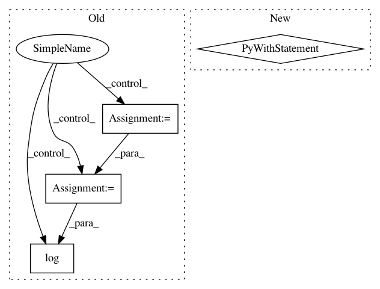

c48128868e7edcbf354ff79fa29fa0b79740b2f4,scripts/tf_cnn_benchmarks/benchmark_cnn.py,BenchmarkCNN,_build_fetches,#BenchmarkCNN#Any#Any#Any#Any#Any#Any#Any#Any#Any#,2233
Before Change
all_grads = []
for grad, var in avg_grads:
all_grads.append(tf.reshape(grad, [-1]))
grads = tf.abs(tf.concat(all_grads, 0))
// exclude grads with zero values.
indices_for_non_zero_grads = tf.where(tf.not_equal(grads, 0))
log_grads = tf.reshape(
tf.log(tf.gather(grads, indices_for_non_zero_grads)), [-1])
tf.summary.histogram("log_gradients", log_grads)
if self.params.summary_verbosity >= 3:
After Change
with tf.device(device):
with tf.name_scope("average_loss"):
average_loss = tf.reduce_mean(losses)
with tf.name_scope("get_gradients_to_apply"):
avg_grads = self.variable_mgr.get_gradients_to_apply(d,
gradient_state)
gradient_clip = self.params.gradient_clip
// TODO(reedwm): Greatly simplify the learning rate code.
if self.params.variable_update == "horovod":
// Each worker independently increments global_step.
In pattern: SUPERPATTERN
Frequency: 3
Non-data size: 4
Instances
Project Name: tensorflow/benchmarks
Commit Name: c48128868e7edcbf354ff79fa29fa0b79740b2f4
Time: 2018-07-18
Author: reedwm@google.com
File Name: scripts/tf_cnn_benchmarks/benchmark_cnn.py
Class Name: BenchmarkCNN
Method Name: _build_fetches
Project Name: rlworkgroup/garage
Commit Name: 783e415c29c4a4124ea426c824864a32b0f8ee71
Time: 2019-09-05
Author: hegde.nishanth@gmail.com
File Name: src/garage/tf/policies/gaussian_mlp_policy.py
Class Name: GaussianMLPPolicy
Method Name: dist_info_sym
Project Name: rlworkgroup/garage
Commit Name: e09e6dc678f9b9c198ed361eea0dffa7749bc553
Time: 2020-05-01
Author: 43084978+yonghyuc@users.noreply.github.com
File Name: src/garage/torch/algos/vpg.py
Class Name: VPG
Method Name: train_once